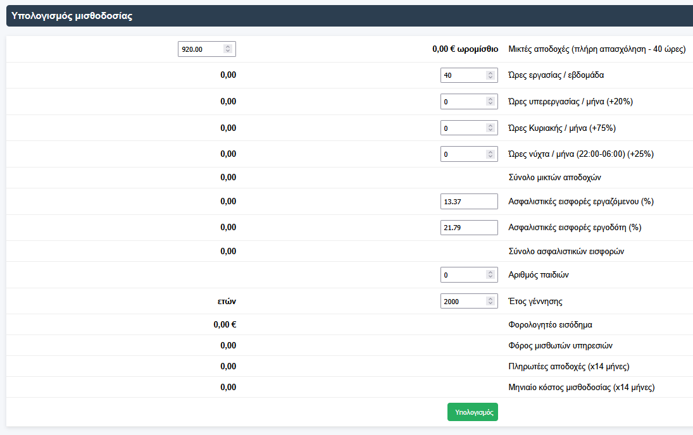
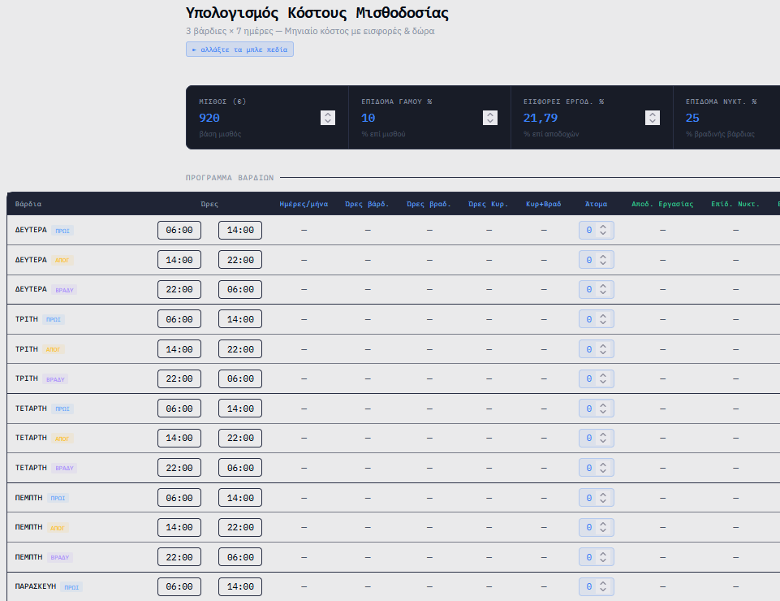
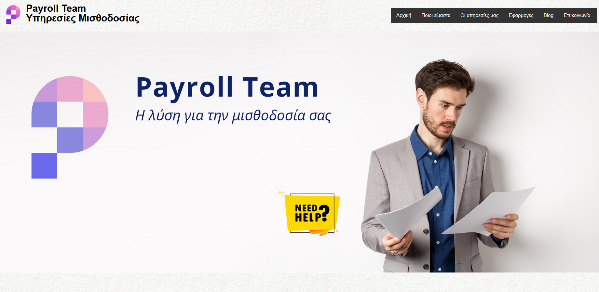
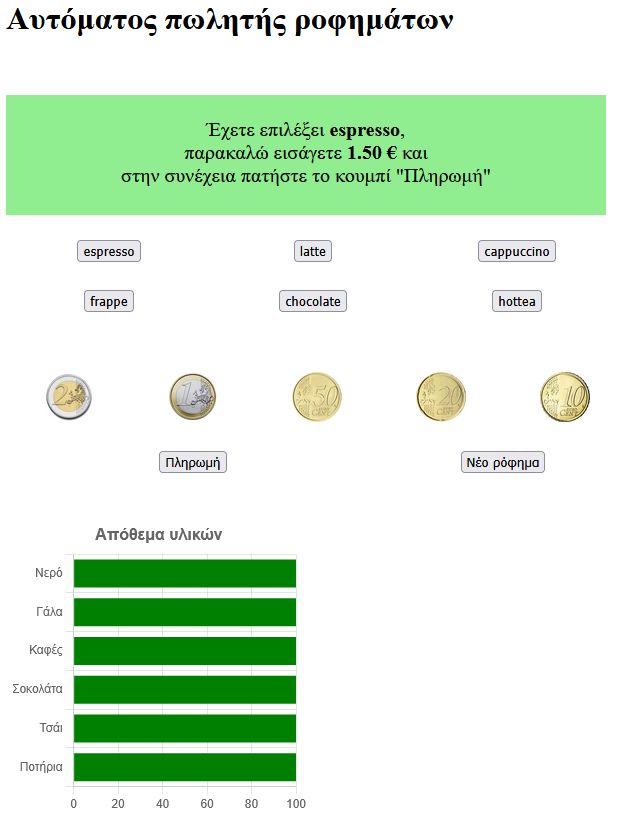
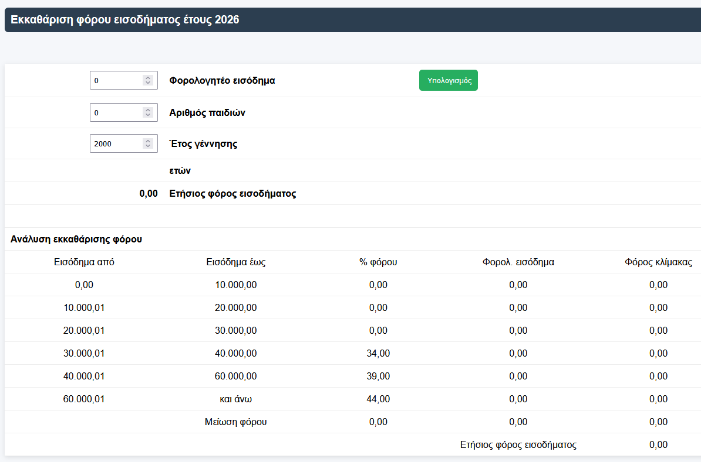
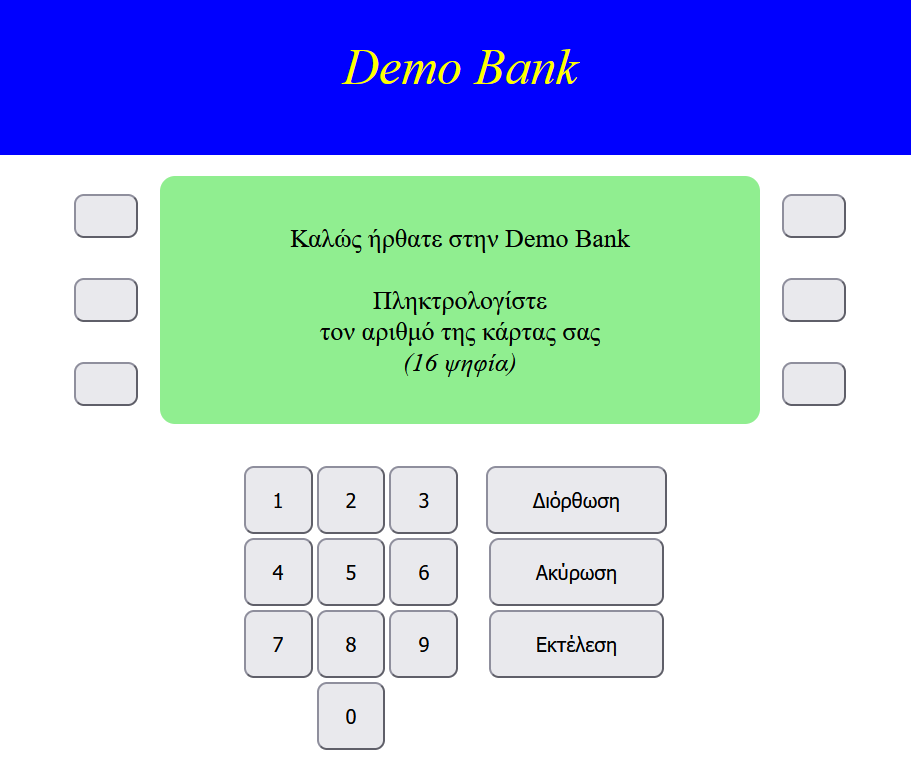

| Περιγραφή | |
|---|---|
 |
Εφαρμογή υπολογισμού μισθού. Υπολογίζει τον μισθό για μερική ή πλήρη απασχόληση, με βάση τις ώρες εργασίας, ώρες υπερεργασίας, νυχτερινών και Κυριακών/αργιών. Υπολογίζει ποσό ασφαλιστικών εισφορών και τον ΦΜΥ σύμφωνα με την ηλικία (έτος γέννησης) και τον αριθμό των παιδών του εργαζόμενου. Γλώσσες: PHP, HTML, CSS |
 |
Εφαρμογή υπολογισμού κόστους μισθοδοσίας μιας εταιρείας security Ο εργοδότης καταχωρεί το εβδομαδιαίο ωράριο των εργαζομένων του και η εφαρμογή υπολογίζει το κόστος της μισθοδοσίας ανά ώρα, μήνα και φύλαξη. Εφόσον έχουμε εργασία νυχτερινές ώρες ή Κυριακή, υπολογίζει αυτόματα τις προσαυξήσεις. Συνυπολογίζει στο κόστος της μισθοδοσίας και τις αμοιβές για δώρα και επιδόματα. Γλώσσες: HTML, CSS, JavaScript |
 |
Ιστοσελίδα λογιστικού γραφείου Απλή και σύγχρονη ιστοσελίδα λογιστικού γραφείου. Γλώσσες: HTML, CSS |
 |
Προσομοίωση αυτόματου πωλητή καφέ Ο χρήστης πατάει τα κουμπιά που θα πατούσε σε ένα πραγματικό αυτόματο πωλητή καφέ. Η μηχανή ελέγχει αν υπάρχουν τα απαιτούμε υλικά για την παρασκευή του καφέ, ελέγχει εάν ο πελάτης πλήρωσε την αξία του καφέ που επέλεξε, ετοιμάζει τον καφέ και πηγαίνοντας στον επόμενο πελάτη εμφανίζει το ποσοστό πληρότητας των υλικών. Γλώσσες: HTML, CSS, JavaScript |
 |
Υπολογισμός φόρου εισοδήματος φυσικού προσώπου για τα εισοδήματα του 2026 Ο χρήστης καταχωρεί το εισόδημα του έτους 2026, το έτος γέννησης και τον αριθμό των παιδών του. Το πρόγραμμα υπολογίζει τον φόρο εισοδήματος σύμφωνα με την ισχύουσα κλίμακα φόρου για το 2026. Γλώσσες: HTML, CSS, PHP |
 |
Προσωμοίωση ΑΤΜ τράπεζας (Υπό κατασκευή) Ο χρήστης καταχωρεί τον αριθμό της κάρτα του και το PIN (pin = 4 τελευταία ψηφία κάρτας) και αφού γίνει η ταυτοποίηση, μπορεί να πραγματοποιήσει αναλήψεις, καταθέσεις και στο τέλος να λάβει και την απόδειξη του για την συναλλαγή που πραγματοποίησε Γλώσσες: HTML, CSS, JavaScript |
| Πρόγραμμα επικοινωνίας ενός λογιστικού γραφείου με τους πελάτες του (Web App) Ο πελάτης του λογιστικού γραφείου κάνει είσοδο με το email του και τον προσωπικό του κωδικό στην εφαρμογή. Μέσα από την εφαρμογή μπορεί να επικοινωνήσει ο πελάτης με το λογιστικό γραφείο μέσω μηνύματος, να λάβει ειδοποιήσεις (είτε γενικές που στάλθηκαν σε όλους τους πελάτες, είτε προσωπικές), να αντλήσει τα αρχεία των δηλώσεων του, πιστοποιητικών ή ότι άλλο αποθηκεύσει το λογιστικό γραφειο στον φάκελο του (αρχεία word, excel, pdf) και να ενημερωθεί από το ημερολόγιο για προθεσμίες ή υποχρεώσεις του Γλώσσες: HTML, CSS, PHP |
|
| Απλοποιημένο λογιστικό πρόγραμμα Ένα απλό λογιστικό πρόγραμμα στο οποίο κάνεις λογιστικές εγγραφές (αγορές, πωλήσεις, δαπάνες, πληρωμές), με δυνατότητα εκτύπωσης ισοζυγίου, ημερολογίου και αναλυτικού καθολικού Γλώσσες: HTML, CSS, PHP, JavaScript, MySQL |